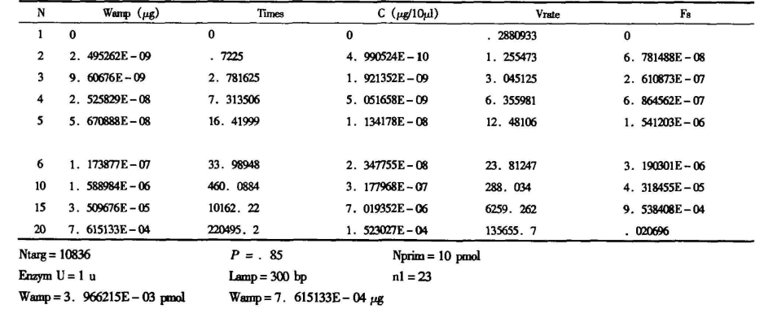
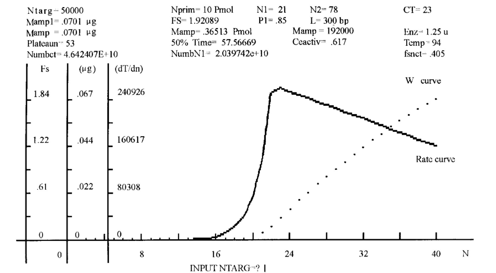

PCR扩增效率模型/PCR扩增动力学方程
一、问题提出
在实验室中，PCR反应的确立往往依靠于经验或多次试验摸索，另一方面，由于PCR反应过程较为复杂，影响因素较多，存在非技术操作，非反应系统导致实验失败的情况，有众多不确定性。基于此，我们提出PCR扩增动力学模型，以此来估算体系的反应速度，产物数量和模板用量等，指导反应的进行。
二、理论依据
DNA的半保留复制是PCR反应动力学的基本依据。PCR反应具有酶促反应动力学的一般特征，即由酶催化反应。[1]但又与其存在差异，表现为其产物可以作为下一轮反应的底物参与反应。
PCR反应的特点主要是模板变性、引物结合、引物延伸三个步骤反复循环。每经过一个循环，模板数会增加1倍或者接近1倍。在每一个循环中，一条双链模板可变性分离为两条单链，经过Taq酶延伸结合在模板上的引物产生两条双链，这是PCR反应基本的数量关系。
三、模型推导
在最初的有限次循环内，中模板的数量可用公式（1）表示：
$ Namp=Ntarg \times (1+p)^n $ (1)由于PCR是酶促反应，其具有酶促反应动力学的特点。经查阅资料显示，提供的Taq酶的分子质量为94 000Dar、最纯的酶为每毫克蛋白200，000单位［2］，从而计算出1U Taq酶应具有$ 3.2 \times 10^{10} $个酶分子。这一规律可用公式（2）表示：
$ Namp=Ntarg \times (1+p)^{n1}+0.5 \times Cenz \times U \times P \times (n-n_1) $ (2)Namp-系统中可利用的模板的数量，Cenz-酶分子常数3.2×1010，U-投入反应体系的酶单位。（n1模板数大于、等于体系酶分子数一半时的循环次数，n＜ n1时n1 ＝ n）
由于酶在每一个循环中要经受变性条件的高温影响而使一些分子失活，因此增加有效酶分子系数项。由相关文献得，分析酶失活的规律，使用多模型优选的曲线拟合方法［3，4］可以得到，酶失活50％的数量时，时间与变性温度的关系为：
$ T=e^{(a+b\times Temp)} $ (3)可计算出在PCR反应过程中受高温影响酶失活的数量为：
$ 0.5\times (n\times time+Ptime)/e^{(a+b\times Temp)} $ (4)系统中具有活性的酶的数量为：
$ 1-0.5\times(n\times time+Ptime)/e^{(a+b\times Temp)}=Ceactiv $ (5)公式就可修改为：
$ Namp=Ntarg\times (1+P)^{n1}+0.5\times Cenz\times U\times P\times Ceactiv\times(n-n_1) $ (6) $ n_1 $ 可由 $ 2\times Ntarg\times (1+P)^n-Cenz\times U\times Ceactiv=0 $ (7)求出n1表示了最后一次指数形式扩增的循环次数。而限定长度的扩增产物数量为：
$ Namp=Ntarg\times (1+P)^{n1}+0.5\times Cenz\times U\times P\times Ceactiv\times (n-n_1)-Ntarg\times(1+P\times n) $ (8)根据反应速率的基本概念，可借用下式来描述PCR反应产物分子数目积累的速率。
$ Vrate=dNamp/dn=\begin{cases} Ntarg\times (1+P)^n\times ln(1+P)-P\times Ntarg &n\leq n_1 \\ 0.5\times Cenz\times U\times P\times{1-[Time\times (2n-n_1)+Ptime]/[2\times e^{(a+b\times temp)}]}-P\times Ntarg &n_2\geq n>n_1 \end{cases} $ (9)扩增产物使用重量表示时，可用公式（10）表示：
$ Wamp=[Ntarg\times (1+P)^{n1}+0.5\times Cenz\times U\times P\times Ceactiv\times (n-n_1)-Ntarg\times(1+P\times n)]\times Cu\times M $ (10)至此，方程中包括了以下的变量（或因素）：
| Ntarg | 初始模板数量 | Ptime | 预变性时间 |
|---|---|---|---|
| P | 平均扩增效率 | n | 循环次数 |
| N1 | 方式转换参数 | Cenz | 酶分子常数（3．2×1010） |
| M | 扩增片段分子质量 | Time | 变性时间 |
| U | 投入系统的酶单位 | L | 扩增片段长度 |
| Temp | 变性温度 | Cu | 转换系数（1．66×10 －18） |
| Ceactiv | 酶活性系数1－0．5× （n× Time＋ Ptime）／e（a＋ b× Temp） | ||
四、模型的分析检验
1.动力学方程绘制的函数图像与PCR原理的比较
由表中的动力学资料绘出的产物积累曲线如下图。从图中的产物积累曲线可以看出：在反应的初期,产物数量很少；在进入线性扩增后的10多次循环中产物大量增加；随着时间的延长,积累的速度在逐渐降低。这一规律与PCR原理的一致,初步证明了构造的PCR动力数学模型的正确性。
根据动力学曲线我们可以知道：PCR反应的产物积累最有效的时期是在线性扩增状态的10～20次循环以内。根据动力学模型的计算结果可以确定PCR反应产物的大概数量,确定电泳时需要的上样体积[5], 以及是否能满足后续处理的需要。
2.动力学方程与文献资料结果的比较
1985年,Saiki RK在Science杂志发表论文[6],其参考文献部分有一段文字说明:以36ng的人基因组DNA (相当于1.8×10^-8pmol) 作为初始模板,1 UTaq进行扩增,20个循环,测定得到4.0×10-3pmol的扩增产物,计算出PCR的平均扩增效率为0.85。
把数据带入到方程中,根据人的单倍体细胞基因组计算,36ng DNA相当于10836个白细胞DNA,即起始模板数是10836。用模板数10836,P=0.85,1UTaq酶, (94℃变性温度)代入方程20次循环,计算的扩增产物理论值是3.966×10-3pmol,与其测定结果4.0×10-3pmol基本一致。这一结果的符合程度,也能初步证明PCR动力数学模型的正确性。
根据动力学模型计算的每一循环获得的产物数量列在下表中。
3.结果
1.经与多种实验数据的对比分析说明,建立的PCR 动力学数学模型是基本正确的；PCR动力学数学模型的构建为整个实验中PCR体系的优化起到了重要作用。
2.PCR反应的动力学过程的影响因素很多,本模型仅包含了一些主要的影响因素,还有部分影响因素无法加入到本模型。
参考资料：
[1] 沈 同主编．生物化学,上册［M］．北京：高等教育出版社，1980,4：232～246．
[2] 林万明主编．PCR技术操作和应用指南［M］．北京：人民军医出版社,1993 ,9：5～29．
[3] 克丙申等．论辐射单扩散测定方法的数据处理［J］．上海免疫学杂志，1988,8（5）：372～373．
[4] 克丙申等．微型计算机在临床免疫球蛋白测定中的应用［J］．医学检验杂志.
[5] 卢圣栋,主编．现代分子生物学实验技术［M］．北京：高等教育出版社,1993 ,7：75．
[6] Saiki R K,Scharf S,Faloona F,et al．Enzymatic amplification of β-globingenomic sequencesand restriction siteanalysisfordiagnosis of sickle cell anemia ［J］．Science,1985 ,230：1350．